aes(x = ..., y = ..., color = ..., linetype = ...)15 可视化
注记学习目标
- 分析信息性可视化背后的原则
- 把可视化纳入分析工作流
- 学会制作 “design plot”：实验数据的一种标准可视化
- 选择不同方式来可视化变异性和分布
- 把可视化概念与测量原则连接起来
是什么让可视化如此有用？它在实验者的工具箱中扮演什么角色？ 简单说，数据可视化就是把“不可见的东西变得可见”。 我们的视觉系统是极其强大的模式检测器。扫视一行行原始数据时完全看不清的关系，一旦用合适的图形形式呈现出来，常常会立刻跳到我们眼前 (Zacks 和 Franconeri 2020)。 好的可视化旨在有意识地利用这种能力，并让它在研究过程的每个阶段发挥作用：从我们第一次读入数据时做的快速合理性检查，到准备传达发现时设计的可发表质量图形。
不过，强大的模式检测器也可能成为负担；如果不小心，我们很容易被骗，以为自己看到了并不可靠、甚至具有误导性的模式。 随着心理学进入更大数据和更复杂行为的时代，我们越来越依赖 数据可视化素养 (Börner, Bueckle, 和 Ginda 2019) 来理解正在发生什么。此外，作为报告数据的研究者，创建与分析（以及设计和预注册）一致的恰当可视化，是报告中 透明性 和 bias reduction（减少偏差） 的重要组成部分。
注记案例研究
绘制一场疫情
1854 年，一场致命的霍乱 疫情席卷伦敦。 当时的科学共识认为，霍乱 这类疾病是通过吸入有毒、恶臭的蒸汽传播的，这个想法被称为“瘴气理论”（miasma theory）(Halliday 2001)。 一位名叫 John Snow 的产科医生和麻醉医生提出了另一种理论：
他认为霍乱 不是通过污浊空气传播，而是通过受污染的供水传播 (Snow 1855)。 为了公开论证这个想法，他开始统计霍乱死亡人数。 他把每个病例标在该地区地图上，并标出水泵位置作为参考。 此外，还可以画一条线，表示最靠近每个水泵的区域；这种技术现在称为 Voronoi diagram。 得到的图清楚显示，病例聚集在 Golden Square 一带，而该区域由 Broad Street 的水泵供水（图 15.1）。 虽然这些地图在 Snow 自己思考中的精确因果作用仍有争议，而且它们很可能是在事件之后很久才制作的 (Brody 等 2000)，但它们仍然在数据可视化史上扮演了重要角色 (Friendly 和 Wainer 2021)。
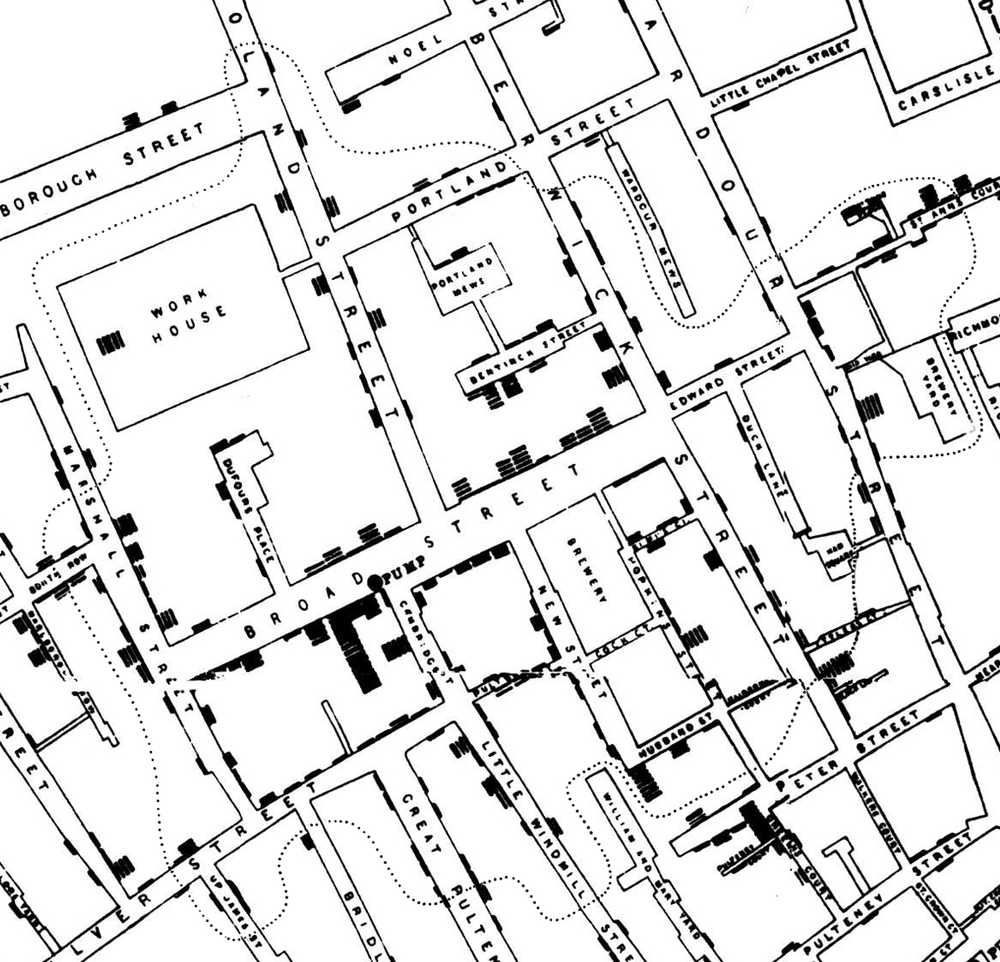
将近两个世纪后，COVID-19 pandemic 席卷全球时，Centers for Disease Control and Prevention (CDC) 这类政府机构制作了疫情地图；这些地图变得更加为人熟悉（图 15.2）。
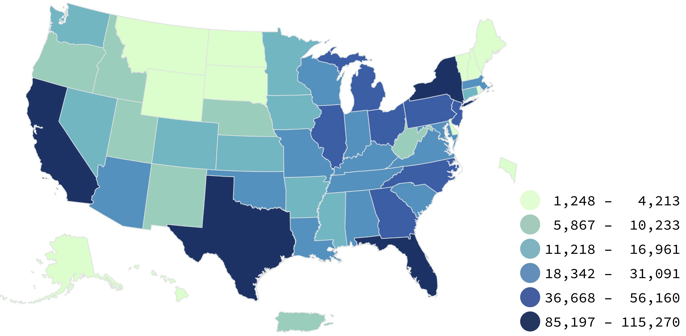
这些地图让抽象统计量可见：把较高累计死亡率映射到更深的颜色后，我们一眼就能看出哪些地区受影响最严重。 而我们并不受限于地图的空间布局。 现在我们也习惯看到横轴对应时间、纵轴对应某个时点的数值。 像下面这样的曲线展示每周新增死亡人数，让我们能够看到其他模式，例如变化速度。 尽管每天都会积累越来越多病例，我们仍然可以一眼看到不同的病例“波峰”，以及它们何时达到峰值（图 15.3）。
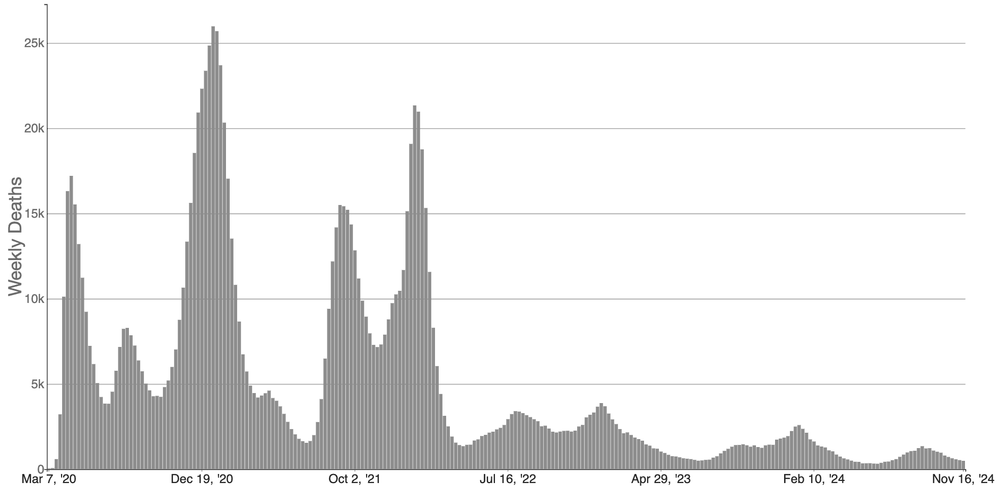
虽然这些可视化捕捉的是纯描述性统计量，但我们常常希望可视化回答更具体的问题。 例如，我们可能会问疫苗接种的有效性：接种和未接种总体的病例率有什么不同？ 在这种情况下，我们可能会说，根据另一个变量，比如疫苗接种状态，来拆分一条曲线（图 15.4）。
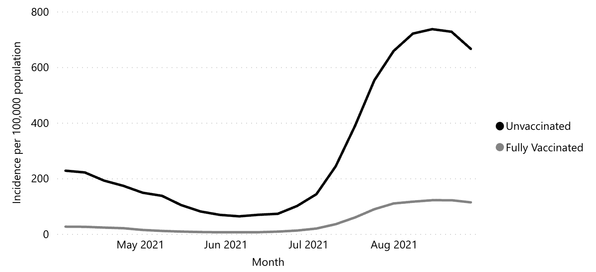
从这张可视化中，我们可以看到未接种个体检测阳性的可能性大约高六倍。同时，这些可视化使用的是观察性数据，因此很难做因果推断。 例如，人们并没有被随机分配到疫苗接种条件中，而那些避免接种的人，可能还在其他方面不同于主动寻求接种的人。 此外，你可能注意到，这些可视化通常没有展示原始数据、每组的样本量，或估计值的不确定性。 在本章中，我们会探讨如何使用可视化来传达严格控制的心理学实验结果，而这类实验允许更强的因果推断。
15.1 （验证性）可视化的基本原则
在本节中，我们先介绍几条简单指导原则，帮助你在实验心理学语境中制作信息充分的可视化。1 记住，我们的需求可能不同于新闻报道或公共政策等其他领域。 你可能见过漂亮、吸引人、铺满整页的图形，上面有小字和丰富信息。 设计和制作这类图形的艺术通常称为 infoviz，它应当区别于我们所说的 统计可视化 (Gelman 和 Unwin 2013)。
粗略说，infoviz 旨在建构丰富、沉浸式的可视探索世界：读者可以花几个小时仔细研究最复杂的图形，并不断发现新的、有趣的模式。 相反，统计可视化旨在一眼清楚传达某个特定推断的逻辑。 这些可视化是论文结果部分可直接使用的图形，支撑关键的、已预注册的核心分析。 本节会回顾制作统计可视化的几个基本原则。 之后我们再回到可视化在更多探索性分析中的作用。
15.1.1 原则 1：展示设计
图有很多种（bar graphs、line graphs、scatter plots、pie charts），图的属性也有很多种（颜色、大小、线型）。 面对这些选择，我们该从哪里开始？ 指导好的统计可视化的第一条原则，是展示你的实验设计。
你的实验中第一个应想到的验证性图，是 design plot。 类似于 章 7 中的 “default” 或 “saturated” model，design plot 应该展示实验的关键因变量，并按所有关键操纵拆分。 关键是，design plots 不应因为某些操纵没有产生效应而省略它们，也不应因为看过数据后觉得某些额外协变量有趣而把它们加进来。 这两个步骤都是 \(p\)-hacking 的视觉类比！相反，design plot 是你可视化的“预注册分析”：它展示对实验操纵所估计因果效应的第一眼观察。用 Coppock (2019) 的话说，就是 “Visualize as You Randomize”！
有时候，把一个实验的完整操纵模式放进同一张图中会很难。下面我们会给出一些技巧，帮助你最大化图中可读的信息量。但如果你已经试过这些技巧，而 design plot 仍然显得拥挤混乱，那也许说明你的实验一次操纵了太多东西！
关于验证性分析应如何映射到图形元素，有一些很强的（不成文）惯例；遵循这些惯例可以最大限度减少困惑。 从你操纵的变量开始，确保它们清晰可见。 按照惯例，主要关注的操纵（例如 condition）放在 x 轴，主要关注的测量（例如 responses）放在 y 轴。 其他关键变量（例如次要操纵和人口统计变量）再分配给其他 “visual variables”（例如颜色、形状或大小）。
注记代码
可视化库 ggplot2（见 附录 E）让数据中的变量映射到视觉元素。ggplot 调用的一部分是 aes()（aesthetics 的缩写）映射：
aesthetics 参数说明数据如何映射到图中的 “marks”。这种透明映射使得探索不同图类型非常容易：只要改变 aes() 语句即可，下面会看到这一点。
作为例子，我们考虑 章 7 中探索过的 Stiller, Goodman, 和 Frank (2015) 数据。 因为这个实验是一项发展研究，主要感兴趣的自变量是参与者年龄组（两岁、三岁或四岁）。 所以年龄被分配到横轴（x 轴）。 因变量是准确率：参与者作出正确反应的试次数比例（共四个试次）。 所以准确率放在纵轴（y 轴）。 现在，我们还有两个可能想展示的变量：条件（实验 vs 控制）和刺激类型（房子、床、意大利面盘）。 不过仔细想想，只有 condition 对呈现实验设计是核心的。 我们也许对某些刺激类型是否系统性更容易或更难感兴趣，但 condition 对理解研究的逻辑更核心。
注记代码
提醒一下，这里是加载 Stiller, Goodman, 和 Frank (2015) 数据的代码：
repo <- "https://github.com/langcog/experimentology/raw/main"
sgf <- read_csv(file.path(repo, "data/tidyverse/stiller_scales_data.csv")) |>
mutate(age_group = cut(age, 2:5, include.lowest = TRUE),
condition = fct_recode(condition,
"Experimental" = "Label", "Control" = "No Label"))
sgf_means <- sgf |> group_by(condition, age_group) |> summarize(rating = mean(correct))15.1.2 原则 2：促进比较
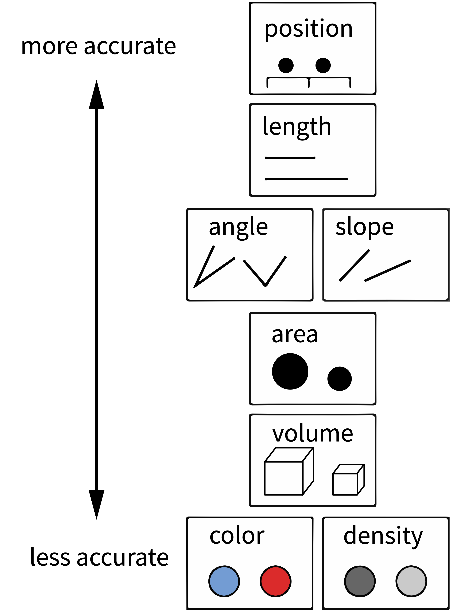
现在你已经把设计元素映射到图的坐标轴上，接下来如何决定展示哪些图形元素？ 你可能会想：原则上，这些分配反正都是任意的。 只要清楚标注我们的选择，无论使用线、点、条、颜色、纹理还是形状，都不应该有关系。 确实，同一份数据有很多展示方式。 但认真思考这些选择，可以让读者更容易解释我们的发现。
统计可视化的第二条原则，是沿着与科学问题相关的维度促进比较。 我们的视觉系统更容易准确比较元素的位置（例如注意到一个点离另一个点有多远），而不是比较它们的面积或颜色（例如注意到一个点比另一个更大或更亮）。 图 15.5 根据视觉系统进行比较的准确度，对 visual variables 做了排序。
例如，我们可以先用颜色来绘制每个年龄组的准确率（图 15.6）。
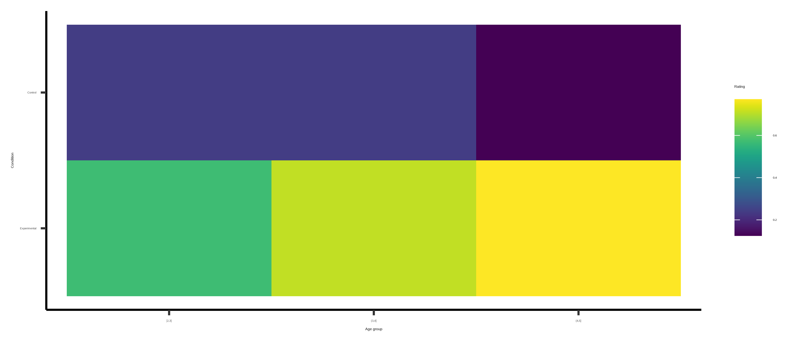
注记代码
为了制作这个（不好的）可视化，我们用了一个名为 geom_tile() 的 ggplot 函数。
ggplot(sgf_means, aes(x = age_group, y = condition, fill = rating)) +
geom_tile() +
labs(x = "Age group", y = "Condition", fill = "Rating")或者我们可以把准确率画成大小/面积（图 15.7）。
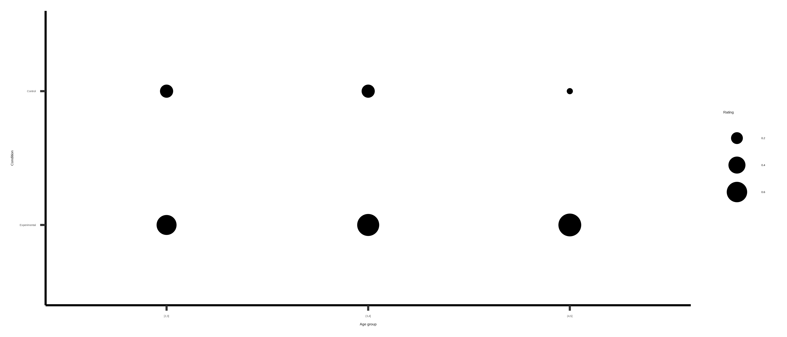
注记代码
为了制作这个（也不好的）可视化，我们在 aes() 调用中把 rating 映射到 size aesthetic。
ggplot(sgf_means, aes(x = age_group, y = condition, size = rating)) +
geom_point() +
labs(x = "Age group", y = "Condition", size = "Rating")这些图让我们看到某个条件（定性地）比其他条件更大，但很难看出大了多少。 此外，这种绘图方式对 age 和 condition 给予同等强调，但我们心里可能有一些特定 contrast，比如随年龄的变化，以及这种变化如何随条件不同而不同。 另一种做法是展示六个条形：左边三个展示 “experimental” 阶段，右边三个展示 “control” 阶段。 年龄组也许可以用不同颜色表示，如 图 15.8。
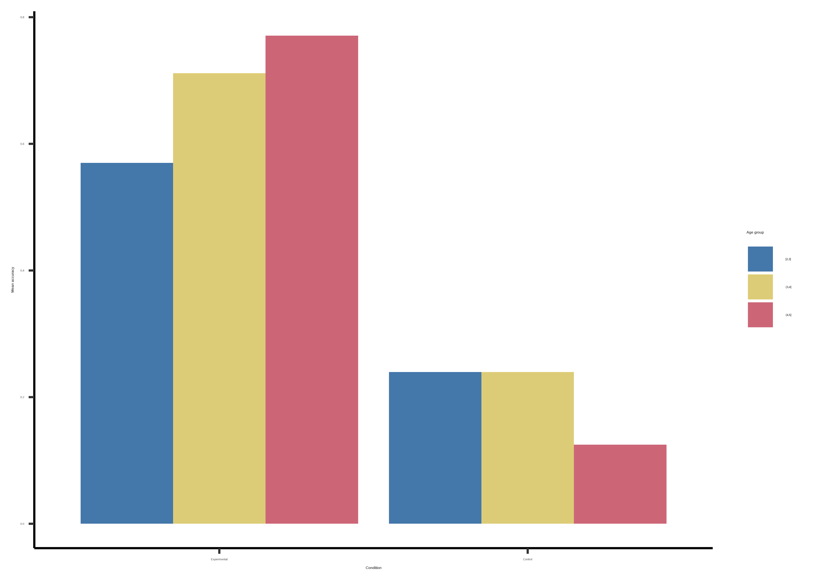
注记代码
我们使用 geom_col() 制作 bar plots。 默认情况下，它会创建 “stacked” bar plots：与同一个 x 值（这里是 condition）相关的所有值会被堆叠在彼此上方。 Stacked bar plots 在某些情况下有用，例如你要绘制总和为 1 的比例，或者想展示某个大 count 如何拆分成子类别。 但心理学中更常见的 bar plot 会把条形并排放置，也就是 “dodges” 它们。 为此，我们使用 position = "dodge" 参数：
ggplot(sgf_means, aes(x = condition, y = rating, fill = age_group)) +
geom_col(position = "dodge") +
labs(x = "Condition", y = "Mean accuracy", fill = "Age group")这张图稍好一些：比较条形高度比比较方块的“蓝度”更容易，把 age 映射到颜色也会把我们的眼睛引向这些 contrast。 不过，我们还可以做得更好，因为我们的实验设计本来就是为了检验一个 interaction。 我们感兴趣的统计量是 difference of differences。 实验条件 下表现的发展变化，在多大程度上不同于控制条件下表现的发展变化？ 有些研究者已经很擅长从条形图中读出 interactions，但这也需要一套复杂的眼动。 我们必须先看左边几个条形的模式，再跳到右边几个条形，并在心里把一个差异和另一个差异进行比较：真正的统计量没有在任何地方被明确展示出来！ 什么能帮助促进这种比较？ 考虑 图 15.9 中的 line plot。
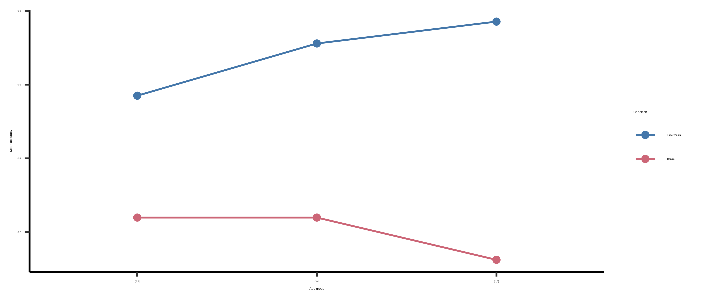
注记代码
使用 geom_point() 和 geom_line() 的组合：
ggplot(sgf_means, aes(x = age_group, y = rating, color = condition)) +
geom_point() + geom_line(aes(group = condition)) +
labs(x = "Age group", y = "Mean accuracy", color = "Condition")我们想解释的 interaction contrast 在这张图中被视觉突出出来。 比较线的斜率，要比在条形之间心算 difference of differences 容易得多。 下面是这条原则的几个推论（改编自 Karl Broman 的一次报告）。
比较彼此相邻的值更容易。当同一张图中包含许多不同条件时，这一点尤其重要。如果某几组条件在理论上特别重要，就把它们放近一些。否则，按有意义的值排序条件（不要按字母顺序，因为那通常是绘图软件的默认值）。
如果可能，用颜色标记标签，并把标签直接放在数据旁边，而不是放在单独图例中。图例会迫使读者来回扫视，以记住不同颜色或线表示什么。
制作 histograms 或 density plots 时，如果分布并排放置，就很难比较。相反，可以通过垂直对齐分布，或把它们设为透明并放在同一坐标轴上，来促进分布比较。
如果 scale 让重要差异难以看清，可以考虑转换数据（例如取对数）。
制作 bar plots 时，要非常小心纵向 y 轴。一个经典的“误导性可视化”错误，是把 y 轴终点放在靠近最小数据点的某个任意值，从而截断条形底部。这具有误导性，因为人们解释条形图时看的是条形的相对面积（即条形占用的墨水量），而不只是它们的绝对 y 值。
如果设计中的一个关键变量映射到颜色，请仔细选择 color scale。例如，如果变量是 binary 或 categorical，就选择视觉上差异明显的颜色，以最大化 contrast（例如 black、blue 和 orange）。如果变量是 ordinal 或 continuous，就使用 color gradient。如果存在自然中点（例如一些值为负、一些为正），可以考虑使用 diverging scale（例如两端使用不同颜色）。还要记住，你的一部分受众可能是色盲。2
2 像 viridis 这样的 palettes 被设计成 colorblind-friendly，而且 perceptually uniform（也就是说，0.1 和 0.2 之间的感知差异大约等于 0.8 和 0.9 之间的差异）。
15.1.3 原则 3：展示数据
看旧论文时，你可能会惊讶地发现图中包含的信息有多少。 最糟糕的例子可能只展示两个条形，代表两个条件的平均值。 这种图相比正文中报告均值的一句话，几乎没有增加什么信息，但它也可能严重误导。 它隐藏了数据中的真实变异，使得基于少数几个数据点的噪声效应看起来像是基于较大样本的更系统性效应。 此外，它压缩了数据的分布，让 multimodal distribution 看起来和 unimodal distribution 一样。 现代统计可视化的第三条原则，是展示数据，并以某种形式可视化变异性。
这条原则最小化的形式，是始终包含 error bars。3 Error bars 把纯描述性可视化变成推断性可视化。 它们代表了对可能观察到的统计量的最小形式不确定性，而不只是实际观察到的那个统计量。 图 15.10 用（bootstrapped）error bars 展示了数据。
3 并且一定要告诉读者 error bars 表示什么：95% confidence interval？均值标准误？如果没有这些信息，error bars 很难解释（见下面的 Depth 框）。
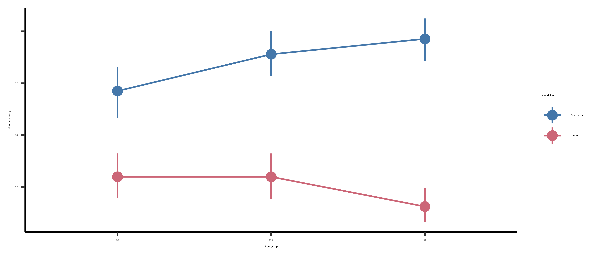
注记代码
Confidence intervals 可以来自多种方法，见 章 6 和 章 7 的讨论。这里我们使用 bootstrapped CIs 作为说明：
sgf_boot <- sgf |>
group_by(condition, age_group) |>
tidyboot::tidyboot_mean(column = correct)有好几个 geoms 可用来展示 error bars，包括 geom_errorbar() 和 geom_linerange()。这里我们使用 geom_pointrange()，紧凑地同时展示点和对应的 error bars：
ggplot(sgf_boot, aes(x = age_group, y = empirical_stat, color = condition)) +
geom_pointrange(aes(ymin = ci_lower, ymax = ci_upper)) +
geom_line(aes(group = condition)) +
labs(x = "Age group", y = "Mean accuracy", color = "Condition")但我们还可以做得更好。 把实际数据点的分布叠加到同一张图上，可以给读者提供关于统计推断的信息，也提供支持这些推断的底层数据的信息。 在 Stiller, Goodman, 和 Frank (2015) 研究中，单个试次的数据点是 binary（正确或错误）。 技术上可以把单个反应显示成 0 和 1 上的点，但这不会告诉我们太多（只会得到一大团 0 和一大团 1）。 当你“展示数据”时，需要问自己的问题是：数据中理论上有意义的变异单位是什么？ 这个问题和 章 7 中关于 mixed-effects models 的讨论密切相关，当时我们考虑应包含哪些 random effects。 这里，读者很可能想知道，在某个年龄组内，不同儿童之间有多少 variance。 为了展示这种变异，我们聚合数据，为每个参与者计算一个准确率分数。4
4 虽然 participant-level variation 是一个很好的默认选择，但相关聚合层级可能随设计而不同。例如，collective behavior studies 可能选择展示每个群体的数据点。这个单位选择在生成 error bars 时也很重要：如果你的参与者数量少，但每个参与者有很多 observations，就会面临一个选择。你可以对所有单个 observations 的扁平列表 bootstrap（得到非常小的 error bars），也可以先在参与者内聚合（得到更大的 error bars，因为它考虑了来自同一参与者的重复 observations 并不独立）。
展示得到的 participant-level 数据分布有很多方式。 例如，boxplot 在盒子中间展示 median（水平线），盒子从 lower quartile（25%）延伸到 upper quartile（75%）。 线再延伸到最大值和最小值（不包括 outliers，outliers 显示为点）。
图 15.11 给出了 Stiller 数据的 boxplots，看起来信息量不大，这也许是因为试次数很少，导致单个参与者平均值很粗。
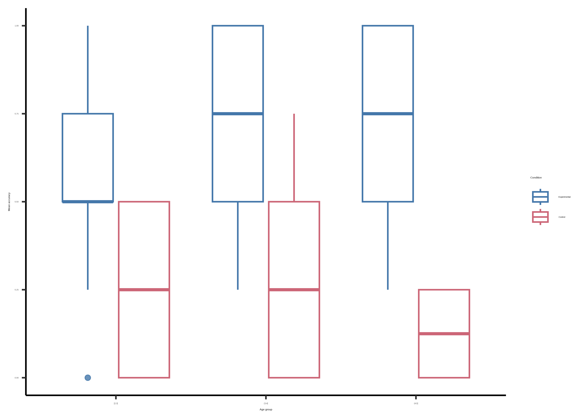
注记代码
我们先计算 participant-level accuracies，然后可以用 geom_boxplot() 制作 box plot：
sgf_subj_means <- sgf |>
group_by(condition, age_group, subid) |>
summarize(rating = mean(correct))
ggplot(sgf_subj_means, aes(x = age_group, y = rating, color = condition)) +
geom_boxplot(alpha = 0.8) +
labs(x = "Age group", y = "Mean accuracy", color = "Condition")一个常见问题是，geom_boxplot() 要求分配给 x 的变量是 discrete。 如果你有数值变量的离散水平（例如 age groups），一定要确保你已经把该变量转换为 factor。 否则，如果它仍被编码为 numeric，ggplot 会把所有水平折叠到一起！
另一种常见做法，是用低透明度的 jittered values 显示原始数据。 在 图 15.12 中，我们对点做 jitter，因为很多参与者有相同数值（例如 50%），如果它们重叠，就很难看出有多少个点。
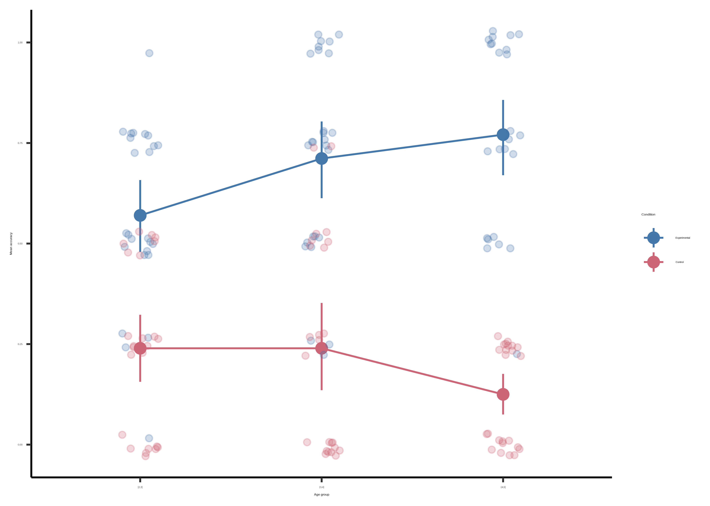
注记代码
用 geom_jitter() 添加 jittered points 很简单，但我们的图已经开始变得相当复杂，所以也许值得盘点一下我们是怎么得到它的。
为了同时绘制 condition means 和 participant means，我们需要创建两个不同的数据框。这里 sgf_subj_means 是每个参与者均值的数据框；sgf_subj_ci 是包含参与者之间均值和 confidence intervals 的数据框。为此，我们使用 tidyboot package (Braginsky 和 Yurovsky 2018) 和 tidyboot_mean() 函数，它给出均值的 bootstrapped 95% confidence intervals。
sgf_subj_means <- sgf |>
group_by(condition, age_group, subid) |>
summarize(rating = mean(correct))
sgf_subj_ci <- sgf_subj_means |>
group_by(condition, age_group) |>
tidyboot::tidyboot_mean(rating) |>
rename(rating = empirical_stat)
ggplot(sgf_subj_ci, aes(x = age_group, y = rating, color = condition)) +
geom_pointrange(aes(ymin = ci_lower, ymax = ci_upper)) +
geom_line(aes(group = condition)) +
geom_jitter(data = sgf_subj_means, alpha = 0.25, width = 0.1, height = .03) +
labs(x = "Age group", y = "Mean accuracy", color = "Condition") 这段代码最值得注意的方面是，geom_jitter() 不只是使用不同的 aesthetic；它还完全使用了另一个 dataframe！混合 dataframes 可以是创建复杂图的重要工具。
也许把这条原则推得最远的格式，是 图 15.13 中展示的所谓 raincloud plot (Allen 等 2019)。 Raincloud plot 把原始数据（“rain”）和 smoothed density（“cloud”）结合起来，并用 boxplot 给出分布的 median 和 quartiles。
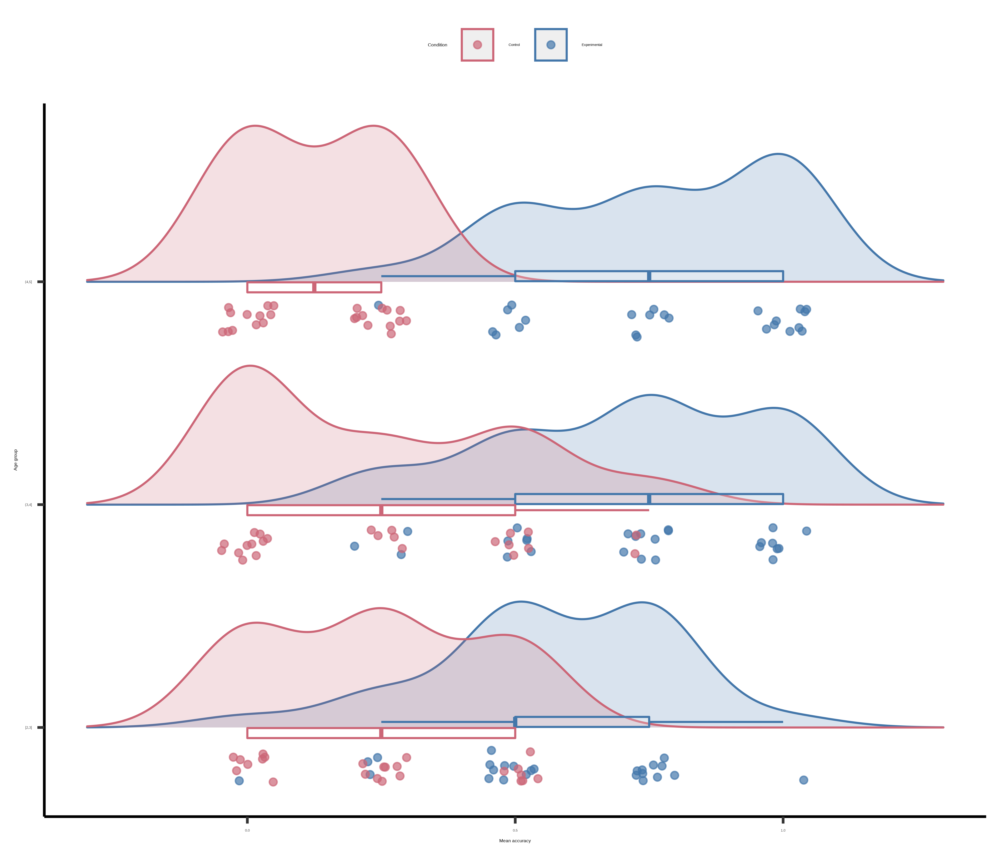
注记代码
这个 raincloud plot 需要两个额外绘图 packages：ggridges (Wilke 2023) 用于 densities，ggstance (Henry, Wickham, 和 Chang 2022) 用于 horizontal boxplots。
library(ggridges)
library(ggstance)
ggplot(sgf_subj_means, aes(y = age_group, x = rating, color = condition)) +
geom_density_ridges(
# density plots ("clouds") staggered by condition
aes(fill = condition), alpha = 0.2, scale = 0.7,
# with jittered points ("rain")
jittered_points = TRUE, point_alpha = 0.7,
# position adjustments specifically for geom_density_ridges()
position = position_raincloud(width = 0.05, height = 0.15, ygap = 0.1)
) +
# horizontal boxplots (with outliers hidden)
geom_boxploth(width = 0.1, alpha = 0.2, outlier.shape = NA, show.legend = FALSE) +
# some customization for axes and legends
scale_y_discrete(expand = expansion(mult = c(0.2, 0.4))) +
guides(fill = "none", color = guide_legend(reverse = TRUE)) +
labs(x = "Mean accuracy", y = "Age group", color = "Condition") +
theme(legend.position = "top")
注记深入
用 error bars 可视化不确定性
一个常见误解是，error bars 是 response variable 的标准差这类数据中 variance 的度量。 相反，它们通常表示从统计模型中提取出来的 precision 度量。 例如，在较旧的论文中，常见做法是使用均值标准误（SEM；见 章 6）。 记住，这不是数据分布的标准差，而是正在估计的均值的 sampling distribution 的标准差。 根据 central limit theorem，这个 sampling distribution 渐近正态，因此可以用数据的经验标准差除以样本量平方根来解析估计标准误：sd(x) / sqrt(length(x))。 基于 SEM 的 error bars 经常看起来误导性地小，因为它们只代表 sampling distribution 的 68% interval，并且会随样本量快速趋近于零。 因此，更常见的做法变成展示 95% confidence interval：\([-1.96 \times \text{SEM}, 1.96 \times \text{SEM}]\)。
虽然这些解析方程仍然常见，但一个越来越流行的替代方案是 bootstrap confidence intervals（关于 bootstrapping，见 章 6 中的 Depth 框）。 Bootstrap 是一种非常通用的技术，尤其适合用来为比均值更复杂的 summary statistics 展示 error bars；在这些情形中，我们没有那么方便的渐近保证和 “closed-form” equations。 例如，当你处理一个 skewed response variable，或一个有明显 outliers 的数据集，并想估计 medians 和 quartiles 时。
或者，假设你想从 categorical data 中估计 proportions，或者想在 hierarchical design 中估计 AUC（area underneath the curve）这类更 ad hoc 的统计量，而你又不清楚如何在 mixed-effects model 中跨 items 或 participants 聚合。 Confidence intervals 的 analytic estimators 原则上可以针对这些统计量推导出来，但会依赖不同假设；实践中使用 bootstrap 往往更透明、更可靠。 只要你能写一段代码从数据集中计算某个值，就可以使用 bootstrap。
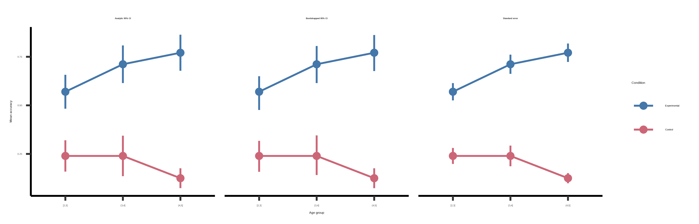
可以看到，bootstrapped 95% CI 看起来类似于由标准误推导出的 analytic 95% CI，只是上下限略微不对称（反映某个方向上的 outliers）。 当然，bootstrap 不是万能药，在特别小的 samples 中可能被滥用。 这是因为 bootstrap 从根本上受限于我们运行它的样本。 如果样本对总体有合理代表性，那么可以预期它会相当准确。 但归根结底，正如人们常说的，“天下没有免费的午餐。” 换句话说，如果不对 data generating process 作额外假设，我们不可能神奇地从小样本中抽出更多信息。
15.1.4 原则 4：最大化信息，最小化墨水
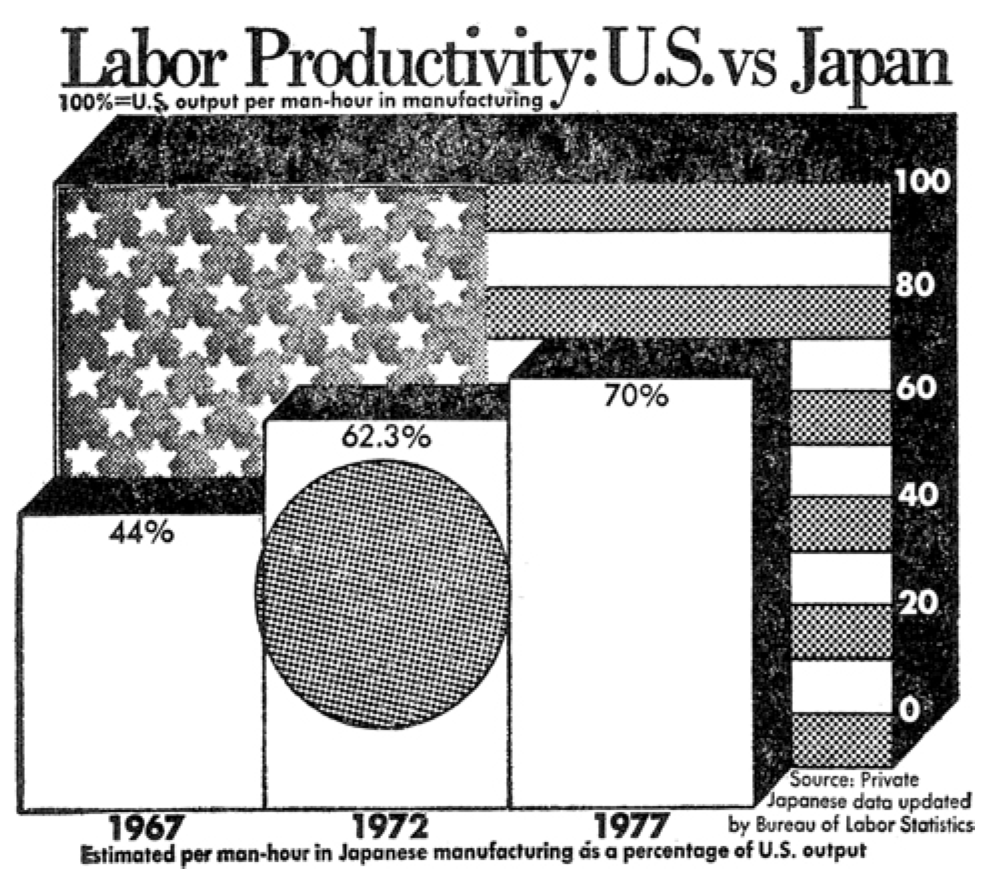
现在，我们已经有了展示设计和数据的基本图形元素，剩下的似乎纯粹是审美偏好问题，比如选择漂亮的配色或字体。并非如此。
有一些基础扎实的原则，可以区分有效可视化和令人困惑、遮蔽信息的可视化。 简单说，我们应该努力用最简单的呈现方式展示最大量的信息：也就是最大化 “data-ink ratio”。 为了计算展示的信息量，Tufte (2001) 提出了一个叫 “data density index” 的度量，即“每平方英寸绘制的数字数量”。 最糟糕的例子密度很低，同时使用了大量多余墨水（例如 图 15.15 和 图 15.16）。
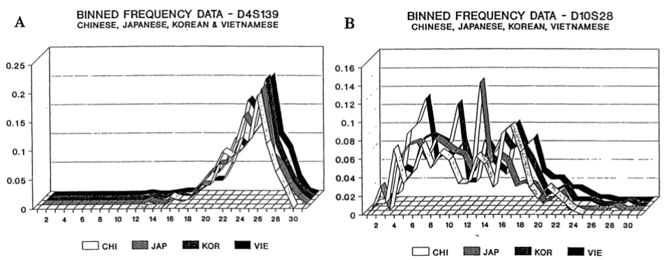
像 ggplot 这样的现代可视化库默认值可以防止一些最糟糕的问题，但通常仍然不是最优。 例如，考虑 图 15.17 中默认灰色背景和网格线引入的视觉复杂度是否合理，或者一个更简洁的 theme 是否已经足够。
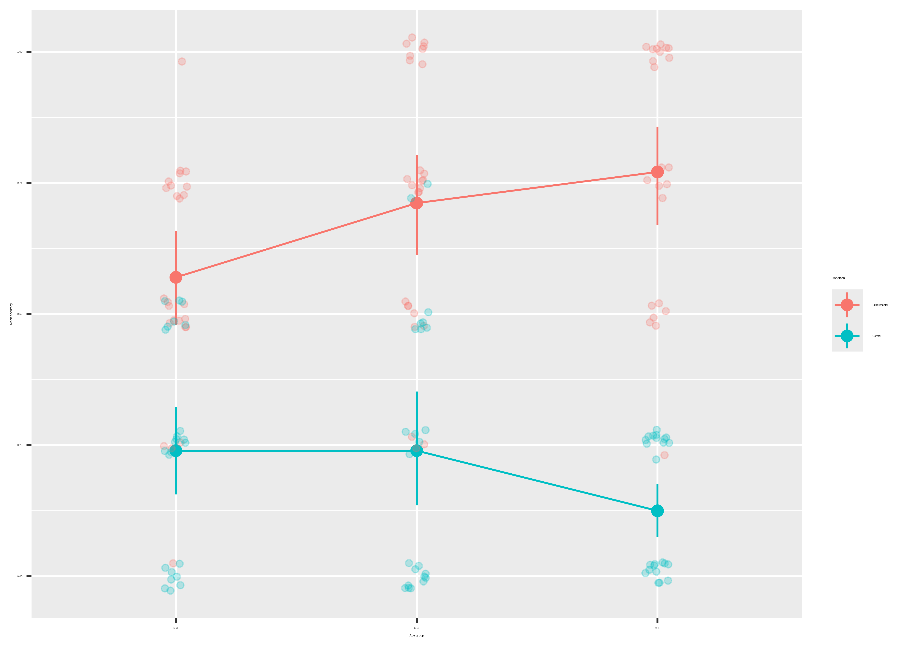
图 15.18 展示了同一张图的稍微更 “styled” 版本：标签直接放在图上，并使用更轻量的 theme。
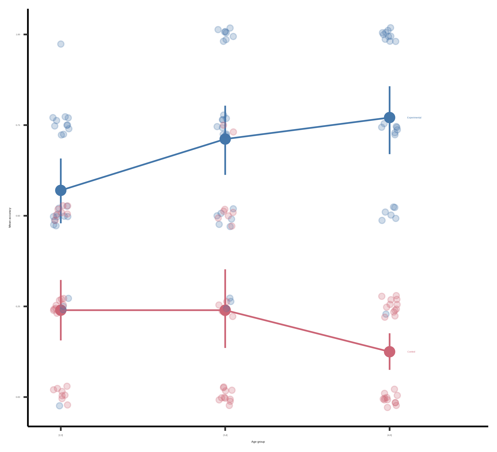
注记代码
为了生成 图 15.18 中的图，我们添加了几个 styling 元素，包括：
- 漂亮、简洁的 custom theme，并使用更大的字号。
- 来自
ggthemespackage (Arnold 2023) 的更 accessible color palette（scale_colour_ptol()）。 - 来自
directlabelspackage (Hocking 2023) 的直接标签geom_dl()：
geom_dl(aes(label = condition), method = list("last.points", dl.trans(x = x + 0.5)))下面是制作好的验证性可视化的几个最后建议：
确保图中所有文字的字号都清晰可读，并且不小于论文其他文字（例如 10 pt）。这可能要求你做一些改变，例如让 axis breaks 更稀疏、旋转文字，或改变图的 aspect ratio。
可视化工具箱中另一个重要工具是 facet plot。当你的实验设计变得更复杂时，可以考虑把变量拆到一个 grid of facets 中，而不是把越来越多颜色和线型塞到同一坐标轴上。换句话说，虽然更高的信息密度通常是好事，但你要瞄准那个 sweet spot，不要让它密到变得困惑。记住原则 2。当每平方英寸里发生的事情太多时，就很难把读者的视线引导到真正重要的比较上；把它摊开到 facets 中，可以让你对显著模式有额外控制。
有时这些原则会彼此冲突，你可能需要优先考虑可读性，而不是例如展示所有数据。例如，假设有一个 outlier 比 summary statistics 远几个数量级。如果 axis limits 缩小到能展示这个点，那么图的大部分都会是空白！你可以合理地决定，不值得只为了展示一个点，就把可视化的关键统计问题压缩到图底部一厘米。截断坐标轴，并在 caption 中说明排除了一个点，可能就足够了。
修正坐标轴标签！一个常见错误，是保留你在绘图软件中用于命名变量的默认缩写，而不是使用更具描述性的标签（例如用 “RT” 而不是 “Reaction Time”）。在正文和图中，对不同操纵和测量使用一致术语。如果图中有任何地方可能不清楚，就在 caption 中解释。
不同受众可能需要不同细节水平。有时最好折叠掉次要变量（即使它们包含在你的统计模型中），以控制图的密度，并把注意力引向关键问题。
15.2 探索性可视化
到目前为止，本章关注的是验证性数据可视化原则：如何制作 production-quality figures，以传达关键的预注册分析，同时不隐藏变异来源，也不误导读者对结果可靠性的判断。 然而，这只是数据可视化在科学中扮演的一个角色。 另一个同样重要的角色叫做探索性可视化：也就是通过可视化理解自己数据的更日常实践。 这个角色类似于 章 11 中讨论的 exploratory data analyses。 我们通常不会预注册探索性可视化；当我们决定把它们纳入论文时，它们通常服务于次要论证（例如检查某个效应的 robust 性，或验证某个假设是否满足）。
这种可视化在研究者工作流中无处不在。 验证性可视化主要由受众驱动，关注视觉沟通；探索性可视化首先是研究者的认知工具。 第一次加载新数据集时，我们会启动一个新的反馈循环：提出问题，并通过制作可视化来回答它们。 这些可视化随后会提出更多问题，而且常常是调试代码的最佳工具。 下面考虑探索性可视化的一些最佳实践。
15.2.1 检查分布信息
探索性可视化的主要优势，也是它对 data science 独特重要的原因，是它让我们看到关于数据分布的整体信息，而这些信息无法被任何单个 summary statistic 捕捉。 最著名的例子叫 “Anscombe’s quartet”，由四个具有相同统计量的数据集组成（图 15.19）。 它们有相同的均值、相同的方差、相同的相关、相同的回归线和相同的 \(r^2\) 值。 然而，一旦绘制出来，它们会显示出惊人的结构差异。 第一个看起来像带噪声的线性关系，也就是我们想象回归线时脑中那种理想化关系。 但第二个是完美的 quadratic arc，第三个是一条完全无噪声的线加上一个 outlier，第四个几乎是 categorical：除一个 observation 外，其他 observation 共享完全相同的 x 值。
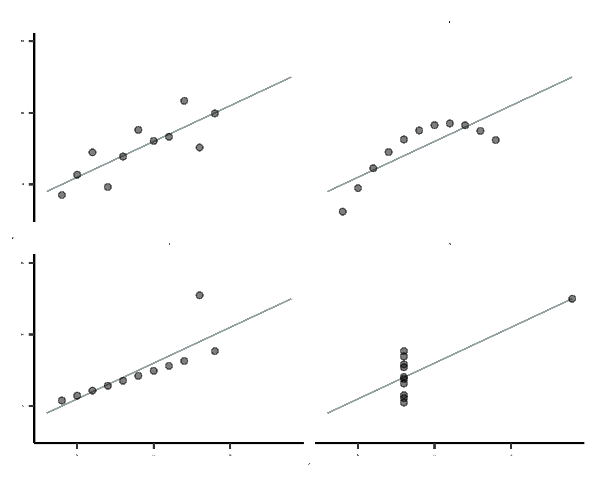
如果我们的分析本应帮助我们区分不同的 data-generating processes，并且这些过程对应不同心理学理论，那么很明显，这四个数据集虽然共享相同统计量，却会对应截然不同的理论。 当然，有任意多的数据集可以有相同统计量，而且多数差异并不重要（毕竟这正是它们被称为 “summary” statistics 的原因！）。 图 15.20 和 表 15.1 展示了依赖 summary statistics 时事情可能有多糟。 当我们用单个统计量（例如组间差异或 regression coefficient）来操作化一个理论的预测时，我们可能会看漏其他所有正在发生的事情。 好的可视化迫使我们拉远视角，看见更大的图景。
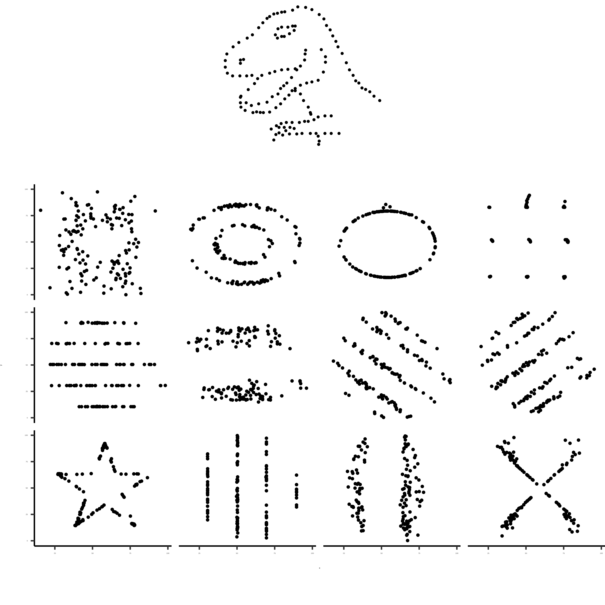
| dataset | mean_x | mean_y | sd_x | sd_y | cor_xy |
|---|---|---|---|---|---|
| away | 54.3 | 47.8 | 16.8 | 26.9 | −0.064 |
| bullseye | 54.3 | 47.8 | 16.8 | 26.9 | −0.069 |
| circle | 54.3 | 47.8 | 16.8 | 26.9 | −0.068 |
| dino | 54.3 | 47.8 | 16.8 | 26.9 | −0.064 |
| dots | 54.3 | 47.8 | 16.8 | 26.9 | −0.060 |
| h_lines | 54.3 | 47.8 | 16.8 | 26.9 | −0.062 |
| high_lines | 54.3 | 47.8 | 16.8 | 26.9 | −0.069 |
| slant_down | 54.3 | 47.8 | 16.8 | 26.9 | −0.069 |
| slant_up | 54.3 | 47.8 | 16.8 | 26.9 | −0.069 |
| star | 54.3 | 47.8 | 16.8 | 26.9 | −0.063 |
| v_lines | 54.3 | 47.8 | 16.8 | 26.9 | −0.069 |
| wide_lines | 54.3 | 47.8 | 16.8 | 26.9 | −0.067 |
| x_shape | 54.3 | 47.8 | 16.8 | 26.9 | −0.066 |
注记事故报告
我们身边的 [Distributional] gorillas
很多 data scientists 在继续检验具体假设前，并不会费心检查数据长什么样。 Yanai 和 Lercher (2020) 巧妙地设计了一个人工数据集，让学生测试这种疏忽。 数据集每一行包含一个人的 body mass index（BMI）和他们某一天走的步数。 虽然 spreadsheet 看起来没有什么异常，但数据构造方式使得只要绘制原始数据，就会显现出一张 gorilla 图像。 一组 19 名学生被给出一套明确的假设来检验（例如 BMI 和步数之间的关系）。 其中 14 名学生没有注意到 gorilla，这表明他们在没有可视化数据的情况下就评价了这些假设。 另一组 14 名学生只是被问到，如果有什么的话，他们可以得出什么结论（没有给出明确假设）。 这些学生中似乎有更多人做了可视化，但其中 5 人仍然没有注意到 gorilla（图 15.21）！
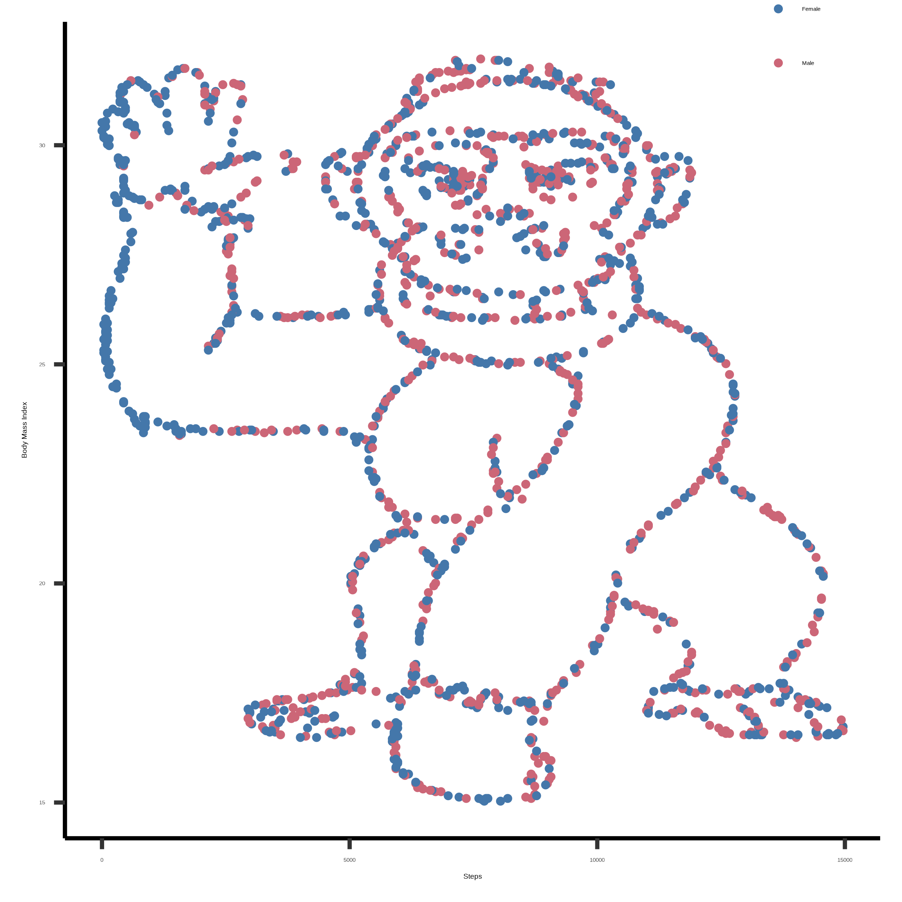
一组学生为了完成作业走最短路径，也许并不令人意外；但在更严肃的情形中，也有人提出过类似担忧：经验丰富的研究者怎么会没有注意到明显造假的数据。 例如，Datacolada bloggers (2021) 对 Shu 等 (2012) 报告的汽车里程数据 (由 Kristal 等 2020 公开发布) 做了一个简单 histogram，马上就观察到它服从完美均匀分布，并且在恰好 50,000 miles 处截断（图 15.22）。 稍微想一想，这个模式就应该非常令人困惑。 在给定时间段内，我们通常预期会看到更像钟形的东西：少数人开得很少（例如 1,000 miles），少数人开得很多（例如 50,000 miles），大多数人落在这些尾部之间。 所以，每个 mileage bin 中有完全相同数量的驾驶者，是非常令人惊讶的。 虽然后续专门分析揭示了更多 fraud 证据（例如基于 rounding patterns 和重复数据点成对出现的模式），但这个朴素的 histogram 已经足以拉响警报。 这篇论文的合作者反复提到的一个遗憾是，他们在报告统计检验之前从未想到要制作这个可视化。
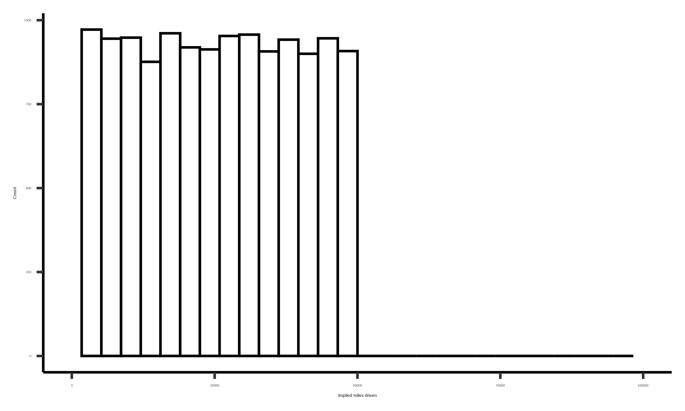
我们的数据总是比预期更 messy。 编码方案中可能有 bug，某一列可能被误标，或者它可能包含我们没想到的一系列值。 也许我们的设计并不完全平衡，或者某个特定参与者的键盘按键出了问题。大多数时候，手动滚动查看原始数据来寻找这类问题并不可行。可视化是运行极其重要的 “data diagnostics” 过程的第一道防线。如果数据里有奇怪 artifact，只要做出合适的可视化，它就会跳出来。
15.2.2 数据诊断
那么，我们应该从哪些可视化开始？最佳实践是始终先制作原始数据的 histograms。作为例子，我们考虑 Blake 等 (2015) 在文章 “Ontogeny of Fairness in Seven Societies” 中共享的丰富、有趣数据集。这项研究考察儿童关于公平推理的发展：既包括公平对他们有利时，也包括公平对他们不利时，并且跨文化比较。
在这项研究中，一对儿童玩 “inequity game”：他们面对面坐着，并得到某种零食分配。 在某些试次中，每个参与者被分到相同数量（“equal” trials），在另一些试次中，他们被分到不同数量（“unequal” trials）。 其中一个参与者被选为 “actor”，可以选择接受或拒绝这个分配：如果拒绝，两名参与者都得不到任何东西。 关键操纵是两种 inequity。 有些 pair 被分配到 “disadvantageous” condition：在 unequal trials 中，actor 分到的比 partner 少（例如一份对四份）。 另一些 pair 被分配到 “advantageous” condition：actor 分到更多（例如四份对一份）。
这项研究的验证性 design plot 会关注 advantageous vs disadvantageous inequality 的发展轨迹 contrast。 不过，这是一个复杂的多变量数据集，包括来自不同年龄组和世界各地不同测试地点的 866 对儿童，而且各地点使用了细微不同的 protocol。 我们该如何为这个数据集开展探索性可视化？
注记代码
如果你想在家跟着这个例子做，可以从我们的 repository 加载数据！
repo <- "https://github.com/langcog/experimentology/raw/main/"
fairness_raw <- read_csv(file.path(repo, "data/viz/ontogeny_of_fairness.csv"))
fairness <- fairness_raw |>
mutate(trial_num = trial |> str_remove("t") |> as.numeric(),
trial_type = eq.uneq |> fct_recode("Equal" = "E", "Unequal" = "U"),
condition = condition |> fct_recode("Advantageous" = "AI",
"Disadvantageous" = "DI"),
age = floor(actor.age.years),
reject = decision == "reject") |>
select(subj_id = actor.id, age, country, condition, trial_num, trial_type, reject) |>
arrange(country, condition, subj_id, trial_num)15.2.3 绘制数据收集细节
先把握一些基本 sample 特征。 每个年龄 bin 中有多少参与者（图 15.23）？
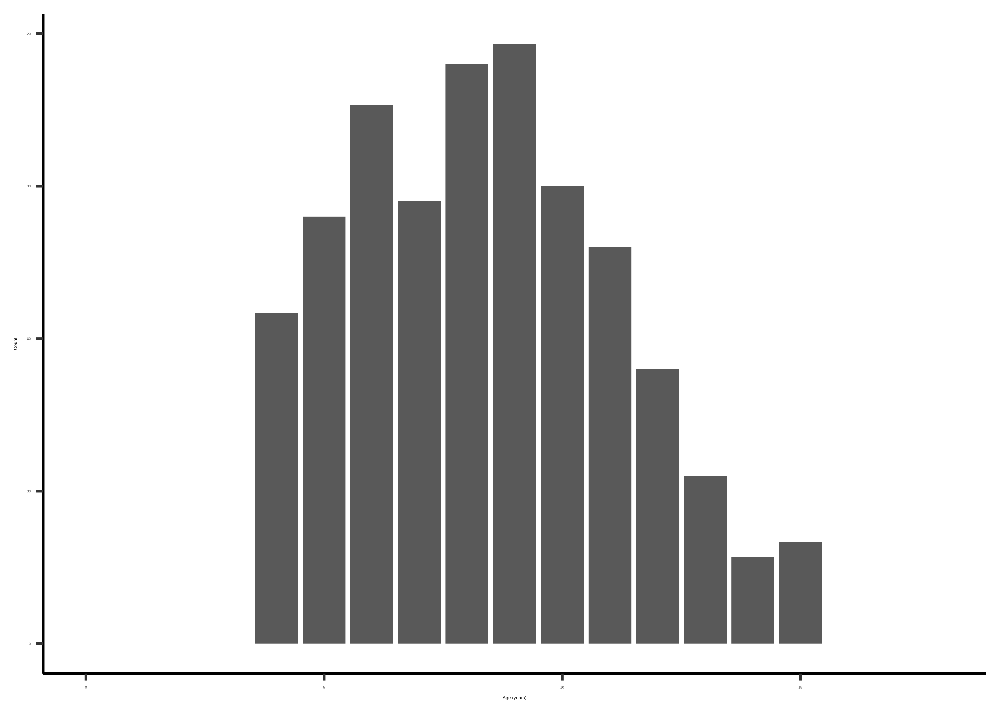
注记代码
探索性 histograms 往往包含一个 aggregation step 和一个 plotting step。在 aggregation step 中，我们使用方便的 count() 函数，它会给出某个 grouping 中的行数（n）。这里我们 count() 两次，先得到每个参与者一行，再统计每个年龄组内的参与者数量。
fairness_by_age <- fairness |>
count(age, subj_id) |>
count(age)然后用 ggplot() 作图：
ggplot(fairness_by_age, aes(x = age, y = n)) +
geom_col() +
xlim(0, 18) +
labs(x = "Age (years)", y = "Count")这里另一个（也许更优雅的）workflow 是使用 histogram：
fairness_by_age <- fairness |>
count(age, subj_id)
ggplot(fairness_by_age, aes(x = age)) +
geom_histogram(binwidth = 1) +
labs(x = "Age (years)", y = "Count")每个国家有多少参与者（图 15.24）？
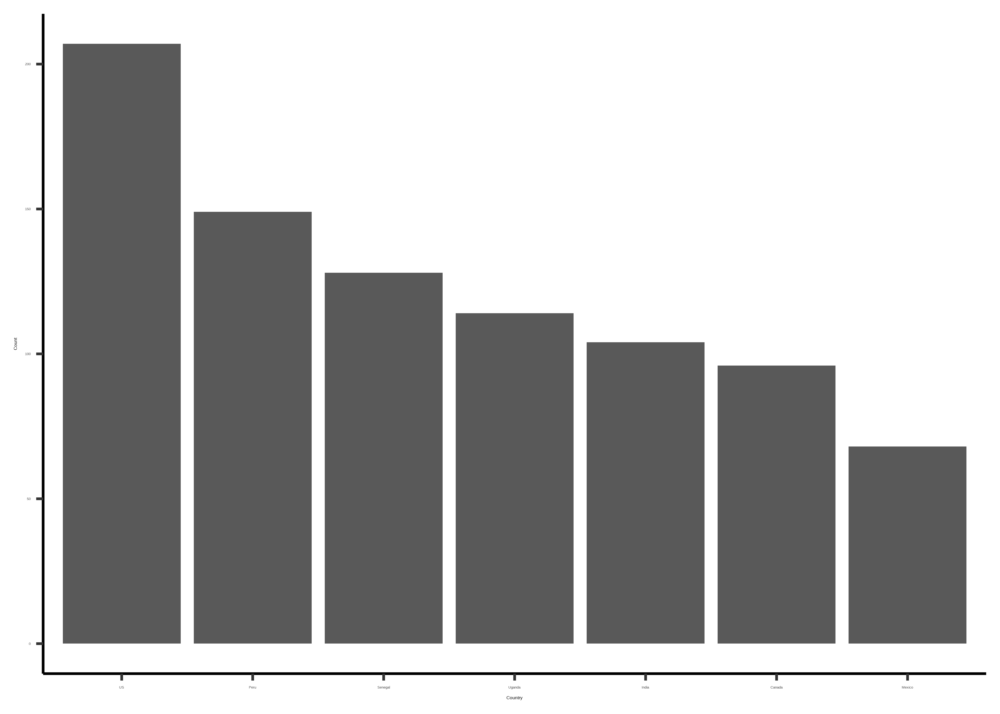
注记代码
这里我们会让写法更简洁，使用一个包含 ggplot() 调用的 pipe chain，这样只需写一个调用就能生成图。你可以自行判断这会提升还是降低代码可读性。我们发现，如果不打算为了绘图以外的用途保留中间数据框，这种写法有时很有用。
fairness |>
count(country, subj_id) |>
count(country) |>
mutate(country = fct_reorder(country, -n)) |>
ggplot(aes(x = country, y = n)) +
geom_col() +
labs(x = "Country", y = "Count")如果使用这种技术，要小心：函数调用之间使用 pipe（|> 或 %>%），但 ggplot layers 之间使用 +！
这里唯一另一个需要指出的小技巧是，我们使用 fct_reorder() 调用按降序排列 country factor 的 levels。这个函数位于 tidyverse 中非常有用的 forcats package (Wickham 2023)，该 package 包含各种处理 factors 的函数。
各国家的年龄分布是否大致相似（图 15.25）？
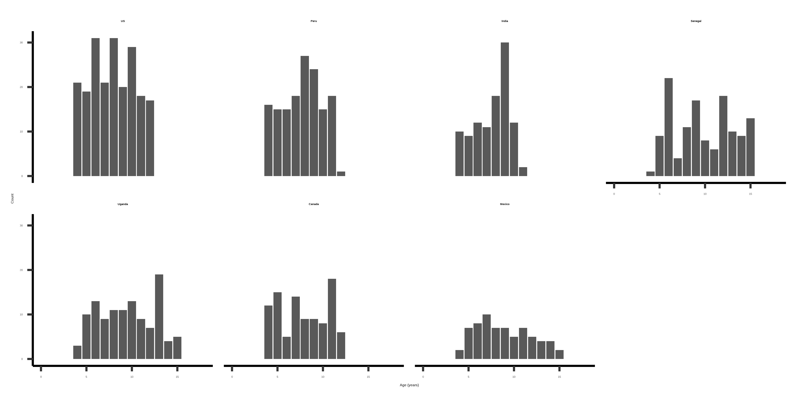
注记代码
这张图只是把前两张图的 grouping factors 结合起来，并使用 facet_wrap() 按国家显示单独 histogram：
fairness |>
count(country, age, subj_id) |>
count(country, age) |>
mutate(country = fct_reorder(country, -n)) |>
ggplot(aes(x = age, y = n)) +
facet_wrap(vars(country), ncol = 4) +
geom_col() +
xlim(0, 18) +
labs(x = "Age (years)", y = "Count")这些探索性可视化帮助我们读出 sample 的一些描述性属性。 例如，我们可以看到各地点年龄范围有些不同：印度的最大年龄是 11 岁，但墨西哥是 15 岁。 我们还可以看到年龄组相当不平衡：在加拿大，有 18 名 11 岁儿童，但只有 5 名 6 岁儿童。
这些属性本身都不是问题，但看到它们会让我们有一种 awareness，可能影响后续分析决策。 例如，如果我们没有恰当地建模 random effects，估计值就会被样本量较大的国家主导。 如果我们计划比较特定的六岁儿童组（出于某种原因），这个分析就会 underpowered。
15.2.4 探索分布
现在我们已经把握了 sample，接下来看看因变量：参与者决定接受还是拒绝分配。 在开始取均值之前，先看看 “rejection rate” 变量如何分布。 我们会在 participant level 聚合，并检查不同 rejection rates 的频率，先看总体情况（图 15.26）。
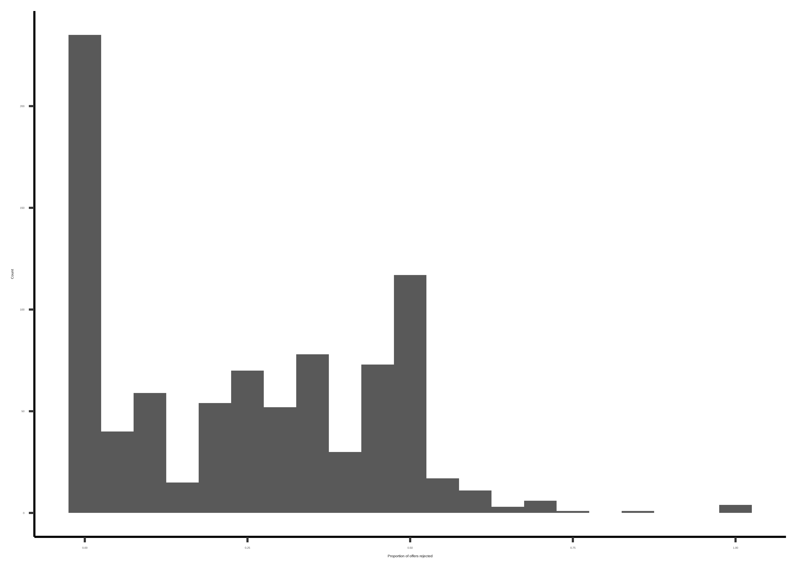
注记代码
Rejection rate 是 continuous variable，所以这里改用 histogram，并选择 0.05 作为合理的 bin width，以便查看分布。
fairness_by_subj <- fairness |>
filter(!is.na(trial_type)) |>
group_by(subj_id) |>
summarize(mean_reject = mean(reject, na.rm = TRUE))
ggplot(fairness_by_subj, aes(x = mean_reject)) +
geom_histogram(binwidth = .05) +
labs(x = "Proportion of offers rejected", y = "Count")我们注意到，许多参与者（27%）在整个实验中从不拒绝。 这种 “zero-inflated” distribution 在心理学中并不少见，设计统计模型时可能需要特别考虑。 我们还注意到，某些值附近有 clumping。 这种 clumping 促使我们检查每个参与者完成了多少 trials（图 15.27）。
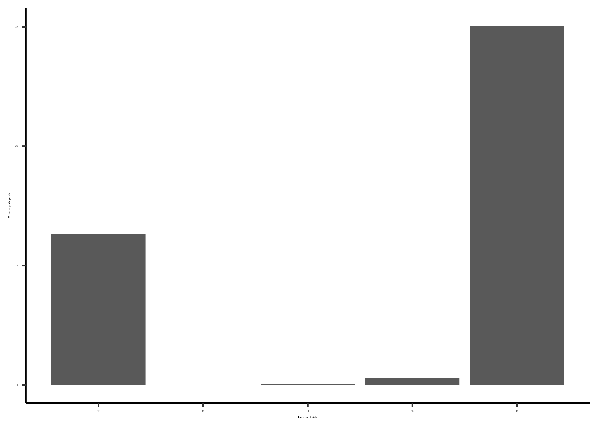
注记代码
这个 histogram 和上面的很类似；不过这里我们使用两次 count()，先得到每个参与者的 trial counts，再统计每种 count 总共出现多少次！
fairness |>
filter(!is.na(trial_type)) |>
count(subj_id) |>
count(n) |>
ggplot(aes(x = n, y = nn)) +
geom_col() +
labs(x = "Number of trials", y = "Count of participants")这里有一些变异：大多数参与者完成了 17 个 trials，但有些参与者完成了 8 个 trials，少数参与者有 14 或 15 个。 鉴于大型 multi-site studies 的后勤复杂性，不同数据收集地点的实验 protocol 有一些变化很常见。 事实上，查看该研究的 supplement 后我们看到，印度和秘鲁有 12 个 trials，而其他地点增加了额外 trials。 在一个 trial 数量被严格控制的设计中，看到这里出现意外数字（比如 14 或 15 个 trial bins），就是数据中可能还有别的事情发生的线索。在这个例子中，这是少量 trials 有 missing data。 更一般地说，在我们自己的数据可视化中看到这种信号，通常会促使我们查找这些 bins 中的 participant IDs，并手动检查其数据，看看发生了什么。
15.2.5 假设驱动的探索
最后，我们可以制作几个按不同变量拆分的 design plot 版本。 先只看最大地点的数据（图 15.28）。
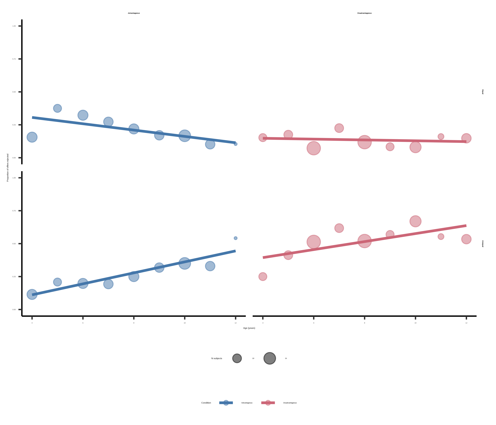
图 15.28 不是我们会放进论文的图，但它帮助我们把握数据模式。 看起来存在一个特定于 Unequal trials 的年龄趋势，rejection rates 随时间上升（相比之下，Equal trials 中的 rates 大致持平或下降）。 同时，disadvantageous group 的 rejection rates 似乎也略高于 advantageous group。
注记代码
这里，我们使用 geom_smooth() 把 regression trends 叠加到原始数据上。 geom_smooth() 有许多不同选项，对应不同 smoothing techniques。 如果你有大量数据，并希望对 trend 的形式做最少假设，nonparametric smoothing 可以是探索性可视化中的好选择。
不过，这里我们展示 linear regression trend，即 geom_smooth(method = "lm")，它更好对应研究预测和所使用的统计模型（见 章 7）。 其他回归形式可以通过 formula 参数指定。 例如，我们可以用 geom_smooth(method = "lm", formula = y ~ poly(x, 2)) 展示 quadratic smoothing。 探索性和验证性可视化中使用的 smoothing 形式可能不同。 在验证性可视化中，如果你要纳入 smoothing curve，通常最好使用统计模型指定的那一种，因为斜率会对应正在检验的推断。
我们先制作 summary dataset：
fairness_by_age <- fairness |>
filter(!is.na(reject)) |>
group_by(country, trial_type, condition, age, subj_id) |>
summarize(mean_reject_subj = mean(reject, na.rm = TRUE)) |>
group_by(country, trial_type, condition, age) |>
summarize(mean_reject_age = mean(mean_reject_subj, na.rm = TRUE),
n_subj = n()) |>
ungroup()然后可以创建可视化：
fairness_by_age |> filter(country == "US") |>
ggplot(aes(x = age, y = mean_reject_age, color = condition)) +
facet_grid(vars(trial_type), vars(condition)) +
geom_smooth(method = "lm", se = FALSE) +
geom_point(aes(size = n_subj), alpha = .5) +
ylim(c(0, 1)) +
labs(x = "Age (years)", y = "Proportion of offers rejected",
color = "Condition", size = "N subjects") +
theme(legend.position = "bottom", legend.box = "vertical")我们经常觉得在 plotting call 中过滤 summary dataset 很方便，这样就可以再次复用它。
现在，让我们把数据重新分箱成两岁年龄组，让单个 point estimates 稍微更可靠，并加入其他国家。5
5 Binning data 是我们经常用来在数据有噪声时降低图复杂度的技巧。不过，它应该谨慎使用，因为不同 binning decisions 有时可能导致不同结论。这里我们尝试了几个 binning intervals，并决定两岁年龄 bins 很好地展示了底层 trends。
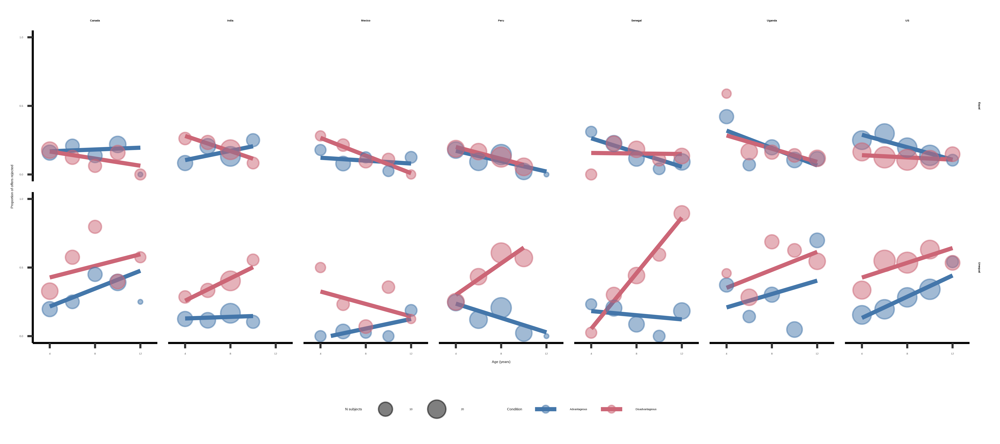
图 15.29 现在已经很接近我们可能放进论文的 “design plot” 的 quick-and-dirty 版本。 DV（rejection rate）在 y 轴上，主要关注变量（age）在 x 轴上。 设计中的其他元素（country 和 trial type）分别映射到颜色和 facets。
注记代码
尽管上面那张图和这张图有所不同，生成它们的代码其实非常相似。唯一差别是创建了 binned variable，并稍微调整 aesthetic 和 faceting variables。
fairness_by_age_binned <- fairness |>
filter(!is.na(reject)) |>
mutate(age_binned = floor(age / 2) * 2) |>
group_by(country, trial_type, condition, age_binned, subj_id) |>
summarize(mean_reject_subj = mean(reject, na.rm = TRUE)) |>
group_by(country, trial_type, condition, age_binned) |>
summarize(mean_reject_age = mean(mean_reject_subj, na.rm = TRUE),
n = n()) |>
ungroup()
ggplot(fairness_by_age_binned,
aes(x = age_binned, y = mean_reject_age, color = condition)) +
facet_grid(vars(trial_type), vars(country)) +
geom_smooth(method = "lm", se = FALSE, aes(weight=n)) +
geom_point(alpha = .5, aes(size = n)) +
scale_x_continuous(breaks = seq(4, 12, 4), limits = c(3,13)) +
scale_y_continuous(limits = c(0, 1), breaks = c(0, .5, 1)) +
labs(x = "Age (years)", y = "Proportion of offers rejected",
color = "Condition", size = "N subjects") +
theme(legend.position = "bottom")15.2.6 把可视化当作调试
探索性可视化的目标，是逐步收敛到对数据中发生事情的更好理解。 当你迭代不同探索性可视化时，保持警惕！ 作图前先想一想自己预期会看到什么，然后问自己是否看到了预期结果。 你可以把这个 workflow 理解为一种 “visual debugging”。 你可能会注意到一个有不可能取值的数据点，例如大于 1 的比例，或小于 0 的反应时。 或者你可能注意到奇怪的 clusters 或 striations，它们可能表明数据录入存在异质性（也许不同 coders 使用了略有不同的 rubric，或采用了不同 rounding 方式）。 你可能注意到某些值缺少某个 attribute，并把它追溯到读入数据或合并 data frames 时的 bug（也许我们的 csv 文件中缺了一个 comma）。 如果你看到任何奇怪的东西，就一路追查，直到理解为什么会发生。 在 analysis pipeline 其他部分中细微而不可见的 bugs，常常会在可视化中作为 red flags 跳出来。
15.3 本章小结：可视化
本章简短回顾了数据可视化原则，特别关注实验心理学的需求，而这些需求常常与其他领域很不相同。 我们尤其关注把可视化变成实验者分析工作流的一部分。 沿着 章 7 中 “default model” 的想法，我们讨论了一种默认 “design plot”，它反映实验设计中的关键选择。 在这个框架内，我们随后讨论了分布和变异性的不同可视化方式，它们能让图形更好地符合测量原则，以及我们在全书一直倡导的对原始数据的关注。
注记讨论问题
选择一项你最近听说过的研究，试着用铅笔和纸画出 “design plot”。什么有效，什么无效？你的草图和论文中的可视化有什么不同？
我们在这里讨论的 “design plot” 想法，在实验设计复杂到无法放进单张图时会遇到问题。想象你有一项 attention deficit hyperactivity disorder（ADHD）治疗试验的数据，该试验在 crossed design 中同时操纵是否给药、患者是否接受 therapy。研究者测量两个不同 outcome：parent report symptom severity 和 teacher report symptom severity，并在四个不同 time-points（baseline、three months、six months、nine months）测量。你如何以透明方式展示这样一个实验的数据？
注记延伸阅读
关于数据可视化有很多好的入门材料。下面是两本聚焦社会科学的书，我们认同它们的建议，而且它们也包含许多实践信息和有用 R 代码，使用的 packages 与本章相同。
Healy, Kieran (2018). Data Visualization: A Practical Introduction. Princeton University Press. Available free online at https://socviz.co.
Wilke, Claus O. (2019). Fundamentals of Data Visualization: A Primer on Making Informative and Compelling Figures. O’Reilly Media. Available free online at https://clauswilke.com/dataviz.
更经典的处理方式可见：
Allen, Micah, Davide Poggiali, Kirstie Whitaker, Tom Rhys Marshall, 和 Rogier A Kievit. 2019. 《Raincloud plots: a multi-platform tool for robust data visualization》. Wellcome open research 4.
Anscombe, Francis J. 1973. 《Graphs in statistical analysis》. The american statistician 27 (1): 17–21.
Arnold, Jeffrey B. 2023. ggthemes: Extra Themes, Scales and Geoms for ggplot2. https://CRAN.R-project.org/package=ggthemes.
Blake, P R, K McAuliffe, J Corbit, T C Callaghan, O Barry, A Bowie, L Kleutsch, 等. 2015. 《The ontogeny of fairness in seven societies》. Nature 528 (7581): 258–61.
Börner, Katy, Andreas Bueckle, 和 Michael Ginda. 2019. 《Data visualization literacy: Definitions, conceptual frameworks, exercises, and assessments》. Proceedings of the National Academy of Sciences 116 (6): 1857–64.
Braginsky, Mika, 和 Daniel Yurovsky. 2018. tidyboot: Tidyverse-Compatible Bootstrapping. https://CRAN.R-project.org/package=tidyboot.
Brody, Howard, Michael Russell Rip, Peter Vinten-Johansen, Nigel Paneth, 和 Stephen Rachman. 2000. 《Map-making and myth-making in Broad Street: the London cholera epidemic, 1854》. The Lancet 356 (9223): 64–68.
Cleveland, William S, 和 Robert McGill. 1984. 《Graphical perception: Theory, experimentation, and application to the development of graphical methods》. Journal of the American statistical association 79 (387): 531–54.
Coppock, Alexander. 2019. 《Visualize as you randomize: Design-based statistical graphs for randomized experiments》. 收入 Advances in Experimental Political Science, 编辑 James N. Druckman 和 Donald P. Green, 320–36. Cambridge University Press.
Datacolada. 2021. 《Evidence of Fraud in an Influential Field Experiment About Dishonesty》. https://datacolada.org/98.
Friendly, Michael, 和 Howard Wainer. 2021. A History of Data Visualization and Graphic Communication. Harvard University Press.
Gelman, Andrew, 和 Antony Unwin. 2013. 《Infovis and Statistical Graphics: Different Goals, Different Looks》. Journal of Computational and Graphical Statistics 22 (1): 2–28.
Halliday, Stephen. 2001. 《Death and miasma in Victorian London: an obstinate belief》. British Medical Journal 323 (7327): 1469–71.
Healy, Kieran. 2018. Data visualization: a practical introduction. Princeton University Press.
Henry, Lionel, Hadley Wickham, 和 Winston Chang. 2022. ggstance: Horizontal ggplot2 Components. https://CRAN.R-project.org/package=ggstance.
Hocking, Toby Dylan. 2023. directlabels: Direct Labels for Multicolor Plots. https://CRAN.R-project.org/package=directlabels.
Kristal, Ariella S, Ashley V Whillans, Max H Bazerman, Francesca Gino, Lisa L Shu, Nina Mazar, 和 Dan Ariely. 2020. 《Signing at the beginning versus at the end does not decrease dishonesty》. Proceedings of the National Academy of Sciences 117 (13): 7103–7.
Mackinlay, Jock. 1986. 《Automating the design of graphical presentations of relational information》. ACM Transactions on Graphics 5 (2): 110–41.
Matejka, Justin, 和 George Fitzmaurice. 2017. 《Same stats, different graphs: generating datasets with varied appearance and identical statistics through simulated annealing》. 收入 Proceedings of the 2017 CHI conference on human factors in computing systems, 1290–94.
Murray, Lori L, 和 John G Wilson. 2021. 《Generating data sets for teaching the importance of regression analysis》. Decision Sciences Journal of Innovative Education 19 (2): 157–66.
Roeder, Kathryn. 1994. 《DNA fingerprinting: a review of the controversy》. Statistical Science 9 (2): 222–47.
Shu, Lisa L, Nina Mazar, Francesca Gino, Dan Ariely, 和 Max H Bazerman. 2012. 《Signing at the beginning makes ethics salient and decreases dishonest self-reports in comparison to signing at the end》. Proceedings of the National Academy of Sciences 109 (38): 15197–200.
Snow, John. 1854. 《Dr. Snow’s Report》. 收入 Report on the Cholera Outbreak in the Parish of St. James, Westminster, during the Autumn of 1854. John Churchill. https://johnsnow.matrix.msu.edu/work.php?id=15-78-55.
———. 1855. On the mode of communication of cholera. John Churchill.
Stiller, Alex J, Noah D Goodman, 和 Michael C Frank. 2015. 《Ad-hoc implicature in preschool children》. Language Learning and Development 11 (2): 176–90.
Tufte, Edward R. 2001. The Visual Display of Quantitative Information. 2nd 本. Graphics Press.
Tukey, John W. 1977. Exploratory data analysis. Pearson.
Wainer, Howard. 1984. 《How to display data badly》. The American Statistician 38 (2): 137–47.
Wickham, Hadley. 2023. forcats: Tools for Working with Categorical Variables (Factors). https://CRAN.R-project.org/package=forcats.
Wilke, Claus O. 2019. Fundamentals of data visualization: a primer on making informative and compelling figures. O’Reilly Media.
Yanai, I, 和 M Lercher. 2020. 《A hypothesis is a liability》. Genome Biology 21, 231 (2020). https://doi.org/10.1186/s13059-020-02133-w.
Zacks, Jeffrey M, 和 Steven L Franconeri. 2020. 《Designing graphs for decision-makers》. Policy Insights from the Behavioral and Brain Sciences 7 (1): 52–63.